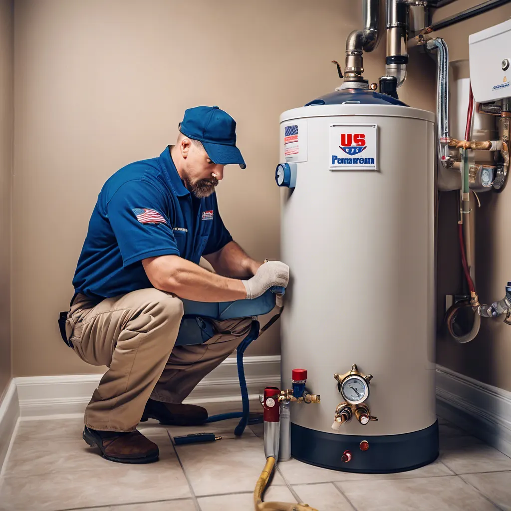

Understanding the Factors — and How Angle Stop Plumbing Helps You Get the Most from Yours!
When it comes to home essentials, your water heater is one of the hardest working appliances in your house. It’s easy to overlook—until something goes wrong. But have you ever noticed how much the life expectancy of a water heater can vary? Some last just 8 years, while others keep on heating for nearly 20 plus years.

Let’s break down why that range is so wide, what affects your water heater’s life span, and how Angle Stop Plumbing can help you get every last year (and drop of hot water) out of yours.
🧰 1. The Type of Water Heater Matters
Not all water heaters are built the same.
- Traditional tank-style water heaters typically last 8–12 years on average if properly maintained.
- Tankless water heaters, which heat water on demand, can last 15–20 years or more when properly maintained.
The difference is in design — tank-style units constantly hold and reheat water, while tankless systems only heat water as you need it, reducing wear and tear.
💧 2. Water Quality Plays a Major Role
It might surprise you, but the quality of your water has a huge impact on how long your water heater lasts.
- Hard water (full of minerals like calcium and magnesium) leads to sediment buildup inside the tank, which can cause overheating and corrosion that will weaken the construction materials of water heater.
- Softened or filtered water helps minimize mineral deposits and internal stress, extending the unit’s lifespan.
That’s why Angle Stop Plumbing often recommends pairing your water heater with a water filtration or softener system — it protects your investment by reducing internal scaling and corrosion.
⚙️ 3. Maintenance Makes All the Difference
Regular maintenance can easily double the life of your water heater! Simple steps like:
- Flushing the tank annually or descaling a tankless to remove sediment buildup.
- Inspecting the anode rod, which protects the tank from rust.
- Checking safety valves and temperature settings.
These proactive steps prevent major breakdowns — and Angle Stop Plumbing can handle all of them for you through routine service appointments.
🌡️ 4. Usage & Installation Quality
Your water heater’s workload also affects its lifespan. Larger families (or high-demand households) cause more heating cycles per day, shortening its life. On top of that, proper installation matters. Poor venting, incorrect pressure settings, or mismatched supply lines can stress the system right from day one.
With Angle Stop Plumbing, every installation is done by trained pros who ensure your system runs efficiently and safely from the start.
🔍 5. How Angle Stop Plumbing Helps You Get the Most from Your Water Heater
Our team doesn’t just install — we optimize. Here’s what sets us apart:
✅ Expert installation for maximum efficiency and longevity
✅ Annual maintenance and flush services
✅ Water filtration solutions to combat hard water damage
✅ Honest recommendations for repair vs. replacement
✅ Flexible payment and lease options for upgrades
We treat every system like it’s our own, so you always get the best performance for your home and budget.
💬 Final Thoughts
The difference between a water heater that lasts 8 years and one that lasts 20 often comes down to care, water quality, and expert installation.
At Angle Stop Plumbing, we believe your water heater deserves high-quality attention — and you deserve peace of mind knowing you’re getting the best performance from every gallon.
Whether you need maintenance, repair, or an upgrade, we’re here to help you make the most of your investment.
📞 (615) 398-3048 | 🌐 www.AngleStopPlumbing.com Serving Middle Tennessee with integrity, reliability, and results you can trust.